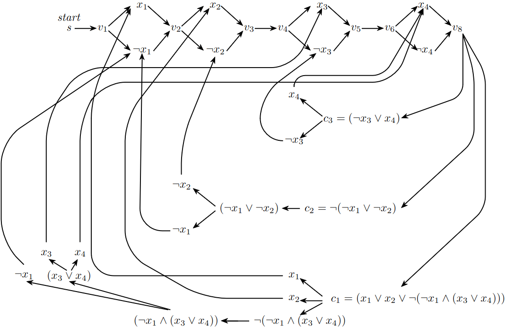

Time Complexity
- CYCLE is P but #CYCLE is #PC
- FP = #P ⟹ P = NP
Closed under Concat
- P: for each way to split w into w1w2O(n)
- NP: cert is ⟨i,c1,c2⟩ with index to split, certs for w1 and w2
- coNP: cert is ⟨c0,c0′,⋯,cn+1,cn+1′⟩
- L1,L2∈NP⟹L1L2∈NP
- verify w1∈L1∨w2∈L2 for any w1w2=w
Lemma. any 3CNF φ can be converted to an equiv 3CNF φ′ such that
- φ′ uses a superset of φ’s variables
- has distinct variables in each clause
- for each satisfying τ of φ
- ∃!τ′ that satisfies φ′
- τ′(x)=τ(x) for any φ’s variable x
To show in NP
- show L is decision
- give certificate for each yes-instance
- show certificate is polysize
- give verifier of certificate
- show verifier is polytime
Space Complexity
P⊆NP⊆PSP=NPSP
TQBF to GG
∀x1,x2∃x3∀x4(x1∨x2∨¬(¬x1∧(x3∨x4)))∧¬(¬x1∨¬x2)∧(¬x3∨x4)

Planar GG
Computability
- A={⟨M,w⟩:∃k⟨M,w,k⟩∈ACC}
- HALT={⟨M,w⟩:∃k⟨M,w,k⟩∈H}
- L⩽mHALT for any recognisable L (i.e. complete in Σ1)
- E={⟨M⟩:∀w,k⟨M,w,k⟩∈ACC}
- ALL={⟨M⟩:∀w∃k⟨M,w,k⟩∈ACC}